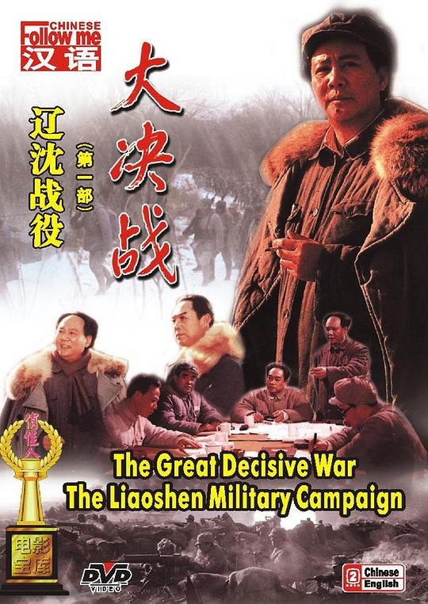
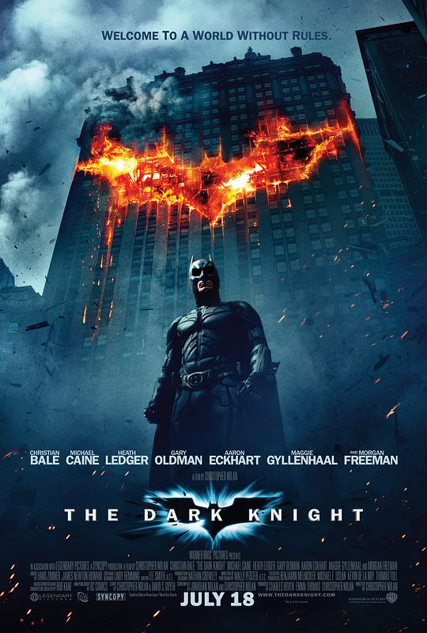
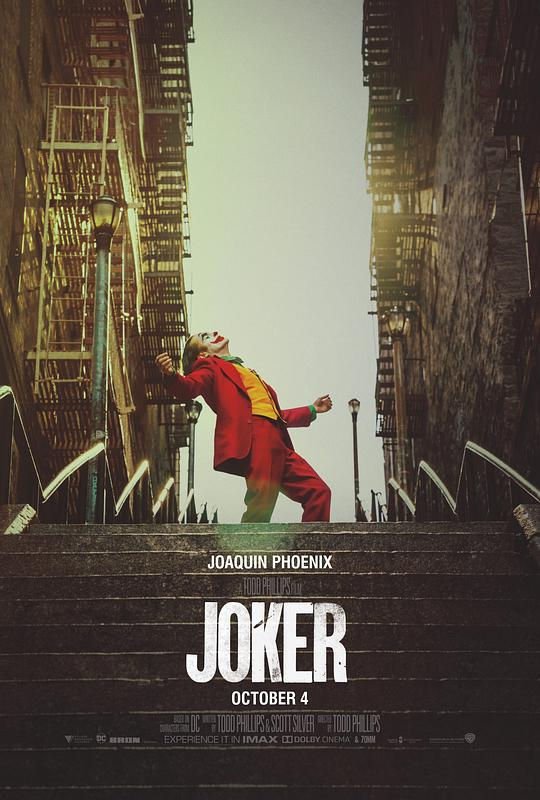
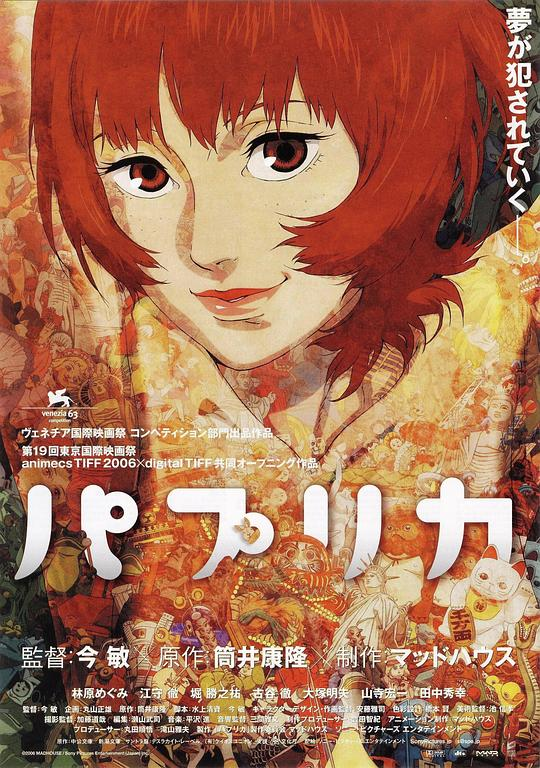
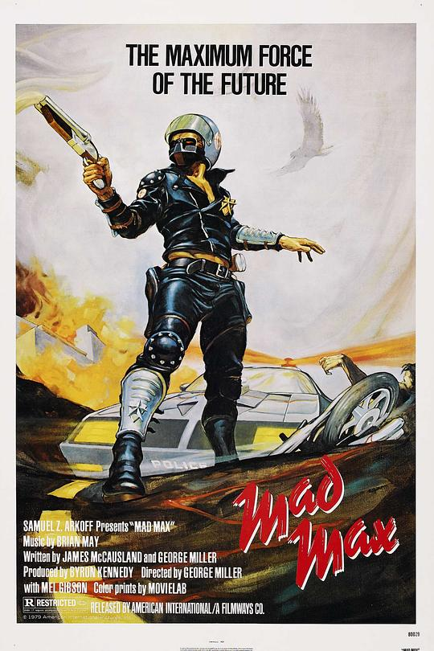
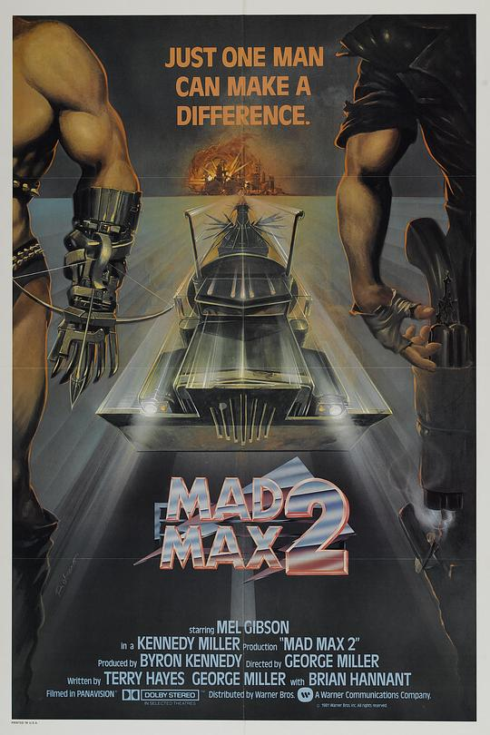
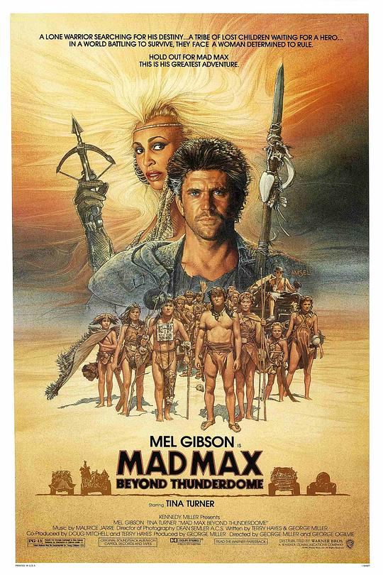

本期首看
魔女宅急便
如果感觉能力丢失了，灵感枯竭了，可以出去走走，看看大好河山，感受丢失许久的生命的意义。 致故事中的魔女琪琪，也致现实中在繁华中打拼的我们。

相当不错，脉络清晰，人格魅力鲜明，从最初的徘徊犹豫，到深思熟虑后的布局。诠释了当时东北局势的焦灼，以及如何兵行险招，以锦州为突破口，再封住营口，包围廖耀湘九兵团，近逼长春投降，突破沈阳，赢得整个辽沈战役。最后几个大战场长镜头看得太爽了，唯一的缺点是三个半小时太长了，不过这也是压缩…
如果感觉能力丢失了，灵感枯竭了，可以出去走走，看看大好河山，感受丢失许久的生命的意义。 致故事中的魔女琪琪，也致现实中在繁华中打拼的我们。
华野在粟裕的带领下包围全歼黄百韬兵团，中野在邓小平、刘伯承、陈毅的带领下包围全歼黄维兵团，再和华野汇合，围困杜聿明部，最终全歼邱清泉、李弥兵团。战争场面比辽沈战役更多更过瘾，也从另一个角度讲述了几位元…

东野出关，面对北平傅作义的六十余万军队，先通过运动战歼灭傅作义最核心的两个军。再以雷霆之势二十九个小时解放天津，歼灭陈长捷部。围困北平，在经过艰难的抉择之后，傅作义选择和平方案解放北平。此片相对于前两…







条目信息中没有可提取的类型。
1979 — 2024 · 平均 1999 年 · 按影片上映年份统计
东野出关，面对北平傅作义的六十余万军队，先通过运动战歼灭傅作义最核心的两个军。再以雷霆之势二十九个小时解放天津，歼灭陈长捷部。围困北平，在经过艰难的抉择之后，傅作义选择和平方案解放北平。此片相对于前两部来说战争场面较少，主要对傅作义刻画的篇幅较长。天津战役拍的也很恢弘，是三部里面第一次也是唯一一次出现解放军的机械化兵团，最后对国歌的诠释是本片的点睛之笔。
相当不错，脉络清晰，人格魅力鲜明，从最初的徘徊犹豫，到深思熟虑后的布局。诠释了当时东北局势的焦灼，以及如何兵行险招，以锦州为突破口，再封住营口，包围廖耀湘九兵团，近逼长春投降，突破沈阳，赢得整个辽沈战役。最后几个大战场长镜头看得太爽了，唯一的缺点是三个半小时太长了，不过这也是压缩再压缩之后的结果了。
华野在粟裕的带领下包围全歼黄百韬兵团，中野在邓小平、刘伯承、陈毅的带领下包围全歼黄维兵团，再和华野汇合，围困杜聿明部，最终全歼邱清泉、李弥兵团。战争场面比辽沈战役更多更过瘾，也从另一个角度讲述了几位元帅与将军的风采。在张震将军的亲自指导下，数十年后依然能看到当时解放军的铿锵风采！
前期比较抽象，中间女主真的让人血压高升，明知道有危险还一个人跑去海滩，啥也没有就要去救儿子，车子抛锚还在公路上跑，在作死的道路上狂奔…… 剧情强制下线让男主开启复仇。不过不得不说男主复仇还是很爽的，疯狂是真疯狂，断手断脚还能连杀三个，v8也是真猛！
废土世界，反乌托邦，在绝望中寻求希望，这一部拍的太棒了，比第三部要强太多太多，比第一第二部也要好。画面非常高级，运镜也绝了，唯一的缺点是主角没有前三部的主角帅，哈哈哈
完善了世界观，整体比1好多了，不过主角还是有些无脑作死行为，不残不会玩。最后那段公路追逐戏还是很爽的。虽然boss也还是因为莫名其妙的犯傻输了，瑕不掩瑜，还不错。